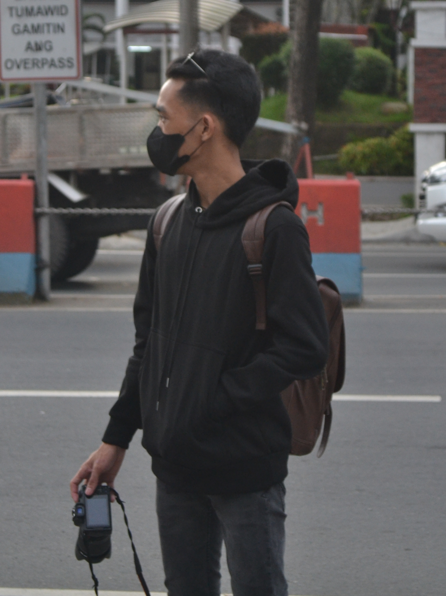

JC R. Ubalde is a freelance photographer, videographer, and designer who thrives in environments where artistic visions come to life. Whether it's capturing moments through photography, designing compelling shirt mock-ups, logos, and packaging, or shooting films and videos for stores and shops, JC aims to create work that not only looks visually appealing but also resonates deeply with the audience.
